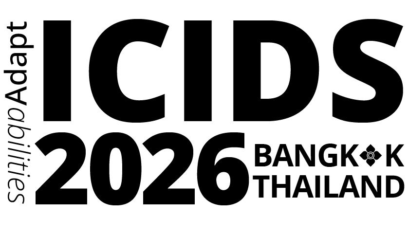

LIFE SIMULATION · VISUAL NOVEL
WEAVER
ELECTRONIC WEAVER / STUDIO SHOWREEL
My
showreel
BY RONGZHEN WAN / CLIFF
01 / SELECTED WORKS
THREE WORLDS. THREE WAYS TO PLAY.Selected
Projects
TIME LOOP · INVESTIGATION
Still Have Time
LETTERS · AI NARRATIVE
Far Letter
02 / RESEARCH & NOTES
ANOTHER WAY TO EXPLORE PLAY.My Research
Outcomes
Unchosen Paths: "Chinese-Style" Indie Games as Counterfactual Spaces of Contemporary Chinese Social Experience
OVERVIEW Looking across Chinese Parents, Chinese Online Game and Matchmaking Inc., this research asks how familiar pressures become game rules and branching choices. It examines play as a way to try out different lives, revisit past decisions and reflect on the social forces shaping them.
Awaiting publication

Far Letter: an AI-Driven Asynchronous Epistolary Narrative Game
OVERVIEW Far Letter explores a quieter way to interact with an AI character: write a letter, step away, and return for a reply. The prototype makes distance and anticipation part of its rhythm. A planned player study will look at writing, story pacing and emotional connection.
Awaiting publication
03 / THE PERSON BEHIND THE WORLDS
SOLO, BUT NEVER SHORT OF IDEAS.Introduction
of the
Electronic
Weaver
HELLO, I'M
Rongzhen WanCliff ( ? )
I make games that bring
stories and play together.
Electronic Weaver is a solo independent game studio run by Rongzhen Wan (Cliff). I create independent games with a strong focus on narrative and gameplay.
My work centres on narrative design and experience-driven gameplay design. I primarily develop with Unity and Godot — exploring how a world feels, how a story unfolds, and what a player leaves behind.
Narrative DesignGameplay DesignUnityGodot
04 / LET'S CONNECT
THE NEXT STORY STARTS WITH A HELLO.